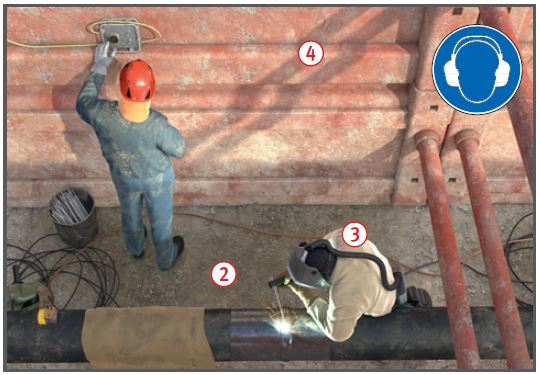
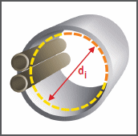

Gefährdungen
- Bei Rohrleitungsbauarbeiten können Personen z. B. durch eingeschwenkte Bauteile oder nicht gesicherte Grabenwände gefährdet werden.
- Beim Schweißen und Schleifen von Rohren bestehen Gesundheitsgefahren z. B. durch Schweißrauche und Schleifstäube.
Allgemeines
- Rohrleitungsbauarbeiten dienen zur Herstellung, Instandhaltung, Änderung und Beseitigung von überwiegend erdverlegten Rohrleitungen für Flüssigkeiten, Gase und andere Stoffe.
- Vor Beginn der Arbeiten ist zu ermitteln, ob im vorgesehenen Arbeitsbereich Anlagen (z. B. erdverlegte Leitungen, Freileitungen) oder andere Gefährdungen (z. B. Kontaminationen, Kampfmittel) vorhanden sind, durch die Personen gefährdet werden können. An der Ermittlung sind Auftraggeber, Eigentümer oder Betreiber zu beteiligen.
Schutzmaßnahmen�
- Hebezeuge und Lastaufnahmeeinrichtungen sind so auszuwählen, dass die Last sicher aufgenommen, transportiert und wieder abgesetzt werden kann.
- Nur Rohrgreifer verwenden, die sich bei Entlastung nicht selbsttätig öffnen (z. B. mittels Sperrklinke oder Schrittschaltwerk).
- Rohre dürfen grundsätzlich nicht in offenen Schlaufen hängend transportiert werden (Hängegang).
- Müssen Rohre beim Ablassen geführt werden, hat dies möglichst mittels Leitseilen zu erfolgen.
- Ist die Anwesenheit von Personen im Gefahrbereich hängender Lasten arbeitsbedingt nicht zu vermeiden, dürfen kraftschlüssige Lastaufnahmemittel nicht verwendet werden.
- Beim Stapeln von Rohren muss jede Lage des Rohrstapels gegen Auseinanderrollen gesichert sein.
- Das Auslegen von Ringbundware hat mit geeigneten Abrolleinrichtungen, z. B. Abrollwagen, Abrolltraversen zu erfolgen.
- Bei Rohren mit Muffenverbindung ist sicherzustellen, dass das Zusammenziehen bzw. Zusammenschieben der Rohre nach den Vorgaben des Rohrherstellers erfolgt.
- Beim Zusammenziehen von Rohren ist der Aufenthalt von Personen im Gefahrbereich des Zugseiles unzulässig.
- Werden die Schubkräfte durch Baumaschinen aufgebracht, besteht erhöhte Quetschgefahr.
- Sicherung der Wände von Baugruben und Gräben gemäß DIN 4124.
- Arbeitsraum bei notwendigen Schweißarbeiten im Kopfloch
 .
.

- Verfahren mit geringer Exposition nach TRGS 519 bei Arbeiten an Asbestzementrohren, z. B. Ausbauen, Trennen, Anbinden von Hausanschlüssen anwenden.
- Verdichtungsarbeiten in mehr als Schulter tiefen Gräben, nur mit emmissionsfreien/armen Geräten oder Geräten mit Fernbedienung durchführen z. B. Anbauverdichter am Bagger, akku betriebene Stampfer, ferngesteuerte Rüttelplatten.
- Physische Belastungen/Arbeitsschwere vermeiden durch
- Auswahl geeigneter Arbeitsverfahren,
- Einsatz technischer Hilfsmittel (z. B. Hebehilfen, Roboter),
- ausreichend bemessenen Arbeitsraum
 (DIN 4124, DIN EN 1610).
(DIN 4124, DIN EN 1610).
Persönliche Schutzausrüstung
- Bei Schweiß- und Schneidarbeiten und bei Arbeiten unter kontrollierter Ausströmung brennbarer Gase schwer entflammbare Schutzkleidung
 tragen.
tragen.
- Gegebenenfalls Einsatz von Atemschutzgeräten.
- Bei Arbeiten im öffentlichen Verkehrsraum Warnkleidung tragen.
Zusätzliche Hinweise für Arbeiten in Rohrleitungen
- Mindestens einen Sicherungsposten einsetzen, der mit den in der Rohrleitung Beschäftigten ständige Verbindung hält, z. B.
- Sichtverbindung,
- Sprechverbindung oder Signalleinen.
- Von jedem Beschäftigten ist eine Handleuchte (Schutzart IP 55, Schutzklasse III = Schutzkleinspannung) mitzuführen.
- Durch Belüftung gewährleisten, dass
- der Sauerstoff gehalt von 19 Vol. % nicht unterschritten wird,
- Arbeitsplatzgrenzwerte (AGW) für Gefahrstoffe nicht überschritten werden,
- keine explosionsfähige Atmosphäre entstehen kann.
- Messtechnische Überwachung der Atmosphäre in der Rohrleitung.
- Kein Einsatz von
- Verbrennungsmotoren,
- Flüssiggas.
- Bei der Bestimmung des lichten Durchmessers di (Lichtmaß) sind im Rohr befindliche Einbauteile, Versorgungsleitungen oder Ähnliches zu berücksichtigen.

- In Rohrleitungen mit einem Lichtmaß von weniger als 600 mm dürfen Personen nicht eingesetzt werden.
- Der Einsatz von Personen ist in Rohrleitungen (kein Abwasser) mit einem Lichtmaß von 600 mm bis 800 mm nur zulässig, wenn
- die Beschäftigten mindestens 18 Jahre alt,
- körperlich geeignet,
- unterwiesen und
- in der Lage sind, mögliche Gefahren zu erkennen,
- bei Einfahrtstrecken von mehr als 20 m darf nur in seilgeführten Rollenwagen eingefahren werden, wenn keine weiteren Gefährdungen, z. B. durch Abwasser, vorhanden sind.
- Die in der Tabelle 1 angegebenen Profilmaße sind Innenmaße.
- Während der Arbeiten muss ein Aufsichtführender ständig im Bereich der Arbeitsstelle anwesend sein.
Tabelle 1
| Lichtmaß |
600 mm |
800 mm |
| Kreisprofil |
Durchmesser = 600 mm |
800 mm |
| Kastenprofil |
Breite/Höhe = 600/600 mm |
600/800 mm |
| Eiprofil |
Breite/Höhe = 600/900 mm |
800/1200 mm |
| Maulprofil |
lichte Höhe = 600 mm |
800 mm |
Zusätzliche Hinweise für elektrische Betriebsmittel
- Bei begrenzter Bewegungsfreiheit bzw. durch Zwangshaltung kann es zu großflächigem Körperkontakt mit der leitfähigen Umgebung kommen. Dies ist häufig in Rohrleitungen, Schächten und Rohrleitungsgräben
 der Fall. Hier besteht erhöhte elektrische Gefährdung.
der Fall. Hier besteht erhöhte elektrische Gefährdung.
- In diesen Bereichen nur mit "S" gekennzeichnete Schweißstromquellen einsetzen, isolierende Unterlage und isolierenden Kopfschutz verwenden.
- In diesen Bereichen sind elektrische Betriebsmittel mit Kleinspannung bzw. über Trenntrafo oder Stromerzeuger (Stromaggregate) zu betreiben. Trenntrafos und Strom erzeuger außerhalb des Bereiches aufstellen und jeweils nur ein Betriebsmittel anschließen.
- Empfohlen wird der Einsatz von Akkugeräten.
07/2021